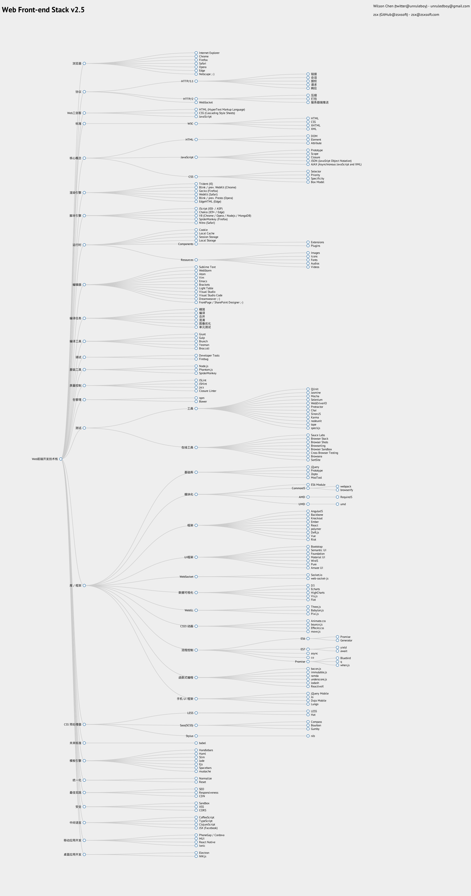

- Web Front-End Development Tech Stack
- Browser
- Protocol
- Web Three Musketeers
- HTML (HyperText Markup Language)
- CSS (Cascading Style Sheets)
- JavaScript
- Standards
- W3C
- HTML
- CSS
- XHTML
- XML
- W3C
- Core Concepts
- HTML
- JavaScript
- CSS
- Selector
- Priority
- Specificity
- Box Model
- Rendering Engine
- Script Engine
- Runtime
- Cookie
- Local Cache
- Session Storage
- Local Storage
- Components
- Extensions
- Plugins
- Resources
- Images
- Icons
- Fonts
- Audios
- Videos
- Editor
- Sublime Text
- WebStorm
- Atom [GitHub]
- Vim
- Emacs
- Brackets [GitHub]
- Light Table [GitHub]
- Visual Studio
- Visual Studio Code (Linux & Mac) [GitHub]
- Dreamweaver ;-)
- FrontPage / SharePoint Designer ;-)
- Build Tasks
- Minify
- Compile
- Concatenate
- Obfuscate
- Image Optimization
- Unit Testing
- Build Tools
- Debugging
- Basic Tools
- Quality Control
- Package Management
- Testing
- Tools
- Online Tools
- Libraries / Frameworks
- Base Libraries
- Modularization
- Frameworks
- UI Frameworks
- WebSocket
- Data Visualization
- WebGL
- CSS3 Animations
- Flow Control
- Functional Programming
- Mobile UI Frameworks
- CSS Preprocessors
- Future Standards
- Template Engines
- Unification
- Best Practices
- Security
- Intermediate Language
- CoffeeScript [GitHub]
- TypeScript [GitHub]
- ClojureScript [GitHub]
- JSX (Facebook)
- Mobile App Development
- Desktop App Development
From: https://github.com/unruledboy/WebFrontEndStack
Click me to share notes
<p style="font-size:14px;">Notes need to be an extension of this article's content!</p><br> <p style="font-size:12px;"><a href="../tougao.html" target="_blank">Article submission, click here</a></p> <p style="font-size:14px;"><a href="./runoob-user-test-intro.html" target="_blank">How to get a registration invitation code</a></p> <h3 class="text-muted"><i class="fa fa-info-circle" aria-hidden="true"></i> You must <a href=".." class="runoob-pop">log in</a> before sharing notes!</h3> <p><a href="./runoob-user-test-intro.html" target="_blank">How to get a registration invitation code</a></p>